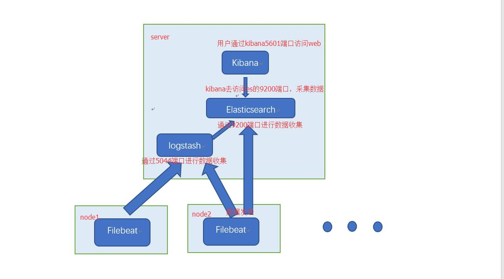
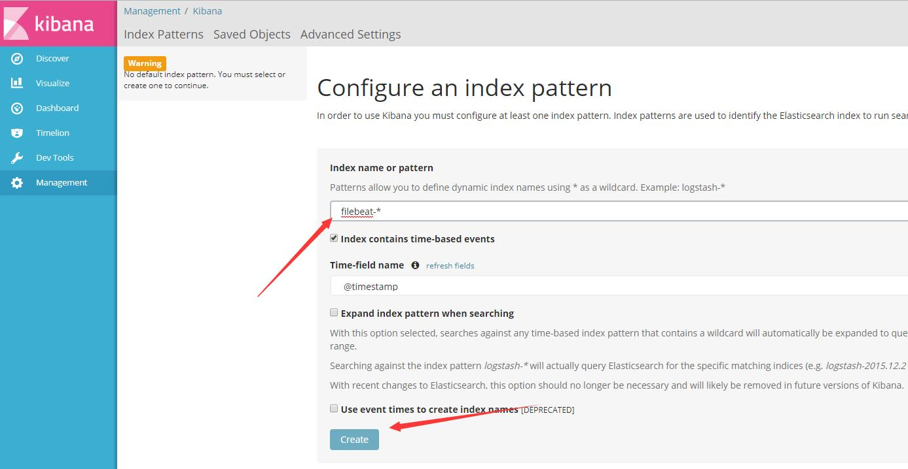
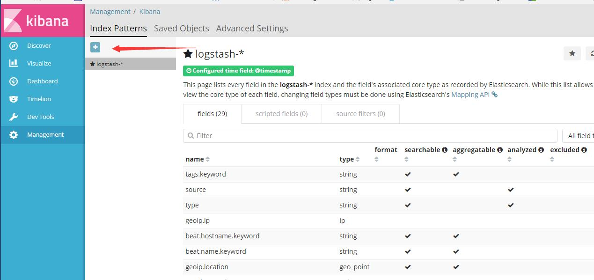
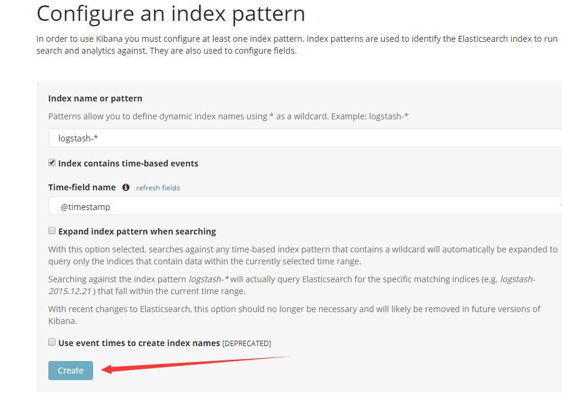

Fluentd 和 Elasticsearch都可以做分布式日志，fluentd需要一个数据库进行收集再读取，负载就比较高，Elasticsearch直接将所有的数据收集，再展通过kibana示出来，负载低，速度快。elk还加入了beats插件，不但可以分析日志还可以分析流量、监控服务等。
Elasticsearch是个开源分布式搜索引擎，它的特点有：分布式，零配置，自动发现，索引自动分片，索引副本机制，restful风格接口，多数据源，自动搜索负载等。
Logstash是一个开源的用于收集,分析和存储日志的工具。
Kibana 也是一个开源和免费的工具，Kibana可以为 Logstash 和 ElasticSearch 提供的日志分析友好的 Web 界面，可以汇总、分析和搜索重要数据日志。
Beats是elasticsearch公司开源的一款采集系统监控数据的代理agent，是在被监控服务器上以客户端形式运行的数据收集器的统称，可以直接把数据发送给Elasticsearch或者通过Logstash发送给Elasticsearch，然后进行后续的数据分析活动。
Beats主要有下面三个组件:
Packetbeat：是一个网络数据包分析器，用于监控、收集网络流量信息，Packetbeat嗅探服务器之间的流量，解析应用层协议，并关联到消息的处理，其支 持ICMP (v4 and v6)、DNS、HTTP、Mysql、PostgreSQL、Redis、MongoDB、Memcache等协议；
Filebeat：用于监控、收集服务器日志文件，其已取代 logstash forwarder；
Metricbeat：可定期获取外部系统的监控指标信息，其可以监控、收集Apache、HAProxy、MongoDB、MySQL、Nginx、PostgreSQL、Redis、System、Zookeeper等服务
本文主要是分析日志的，所以只需装以下服务，如果有需要监控，再装其他beats插件，方法和装filebeat一样。
具体看ELK体系文档。

为了保证服务能够正常运行，要在云平台上开放以下端口。
Elasticsearch有两个端口
9200：收集数据，数据来源有logstash、beats插件等。 9300：发送数据，将数据发送给kibana、grafana等。
Kibana有一个端口
5601：web页面访问端口。
logstash有两个端口
5044：收集数据，数据来源是beats。 9600：数据访问API接口。
server：192.168.254.137
需要装的服务有：JDK:1.8 ，Elasticsearch：5.4.，Logstash：5.4 ，Kibana：5.4.*，Filebeat
note1：192.168.254.135
需要装的服务有：Filebeat
note2：192.168.254.136
需要装的服务有：Filebeat
下载jdk-8u121-linux-x64.rpm包，下载地址：
http://www.oracle.com/technetwork/java/javase/downloads/jdk8-downloads-2133151.html
rpm -ivh jdk-8u121-linux-x64.rpm取得elk的认证
rpm --import https://artifacts.elastic.co/GPG-KEY-elasticsearch 配置yum源
vim /etc/yum.repos.d/elasticsearch.repo [elasticsearch-5.x] name=Elasticsearch repository for 5.x packages baseurl=https://artifacts.elastic.co/packages/5.x/yum gpgcheck=1 gpgkey=https://artifacts.elastic.co/GPG-KEY-elasticsearch enabled=1 autorefresh=1 type=rpm-md
yum install -y elasticsearchelasticsearch单个服务可以做出成集群，可能用不到,下面有标注。
vim /etc/elasticsearch/elasticsearch.yml...
# ---------------------------------- Cluster -----------------------------------
#
# Use a descriptive name for your cluster:
#
cluster.name: tomcat_001 ## 集群需要，集群的名字
#
# ------------------------------------ Node ------------------------------------
#
# Use a descriptive name for the node:
#
node.name: linux-node1 ##集群需要 节点名字
#
# Add custom attributes to the node:
#
#node.attr.rack: r1
#
# ----------------------------------- Paths ------------------------------------
#
# Path to directory where to store the data (separate multiple locations by comma):
#
path.data: /data/es-data/ ##为了防止文件过大，把收集的数据放到其他地方
#
# Path to log files:
#
path.logs: /data/log/elasticsearch/ ##日志文件
#
# ----------------------------------- Memory -----------------------------------
#
# Lock the memory on startup:
#
#bootstrap.memory_lock: true ##是否可以使用swap内存
# ---------------------------------- Network -----------------------------------
#
# Set the bind address to a specific IP (IPv4 or IPv6):
#
network.host: 0.0.0.0 ##对外侦听的ip
#
# Set a custom port for HTTP:
#
http.port: 9200 ##对外侦听的端口
#
# For more information, consult the network module documentation.
#
# --------------------------------- Discovery ----------------------------------
#
# Pass an initial list of hosts to perform discovery when new node is started:
# The default list of hosts is ["127.0.0.1", "[::1]"]
#
#discovery.zen.ping.unicast.hosts: ["192.168.254.137", "192.168.254.135"] ##集群需要，发现集群的ip集合
#
# Prevent the "split brain" by configuring the majority of nodes (total number of master-eligible nodes / 2 + 1):
#
#discovery.zen.minimum_master_nodes: 2 ##集群需要，至少有两个及以上的节点才能有master
...yum install -y logstashlogstash的配置比较复杂，这种方式是通用的，满足一般分析日志需求，具体的看使用篇。
vim /etc/logstash/conf.d/logstash.confinput {
beats {
port => "5044"
}
}
filter {
grok {
match => { "message" => "%{COMBINEDAPACHELOG}"}
}
}
output {
elasticsearch {
hosts => [ "192.168.254.137:9200" ]
}
}注释：
input 数据来源
port => "5044"：对外侦听， filebeat数据通过这个端口发送给logstash。
filter 数据处理
"message" => "%{COMBINEDAPACHELOG}"：把日志数据全部拿出来 ，没有截取
output 数据输出
hosts => [ "192.168.254.137:9200" ]：把收集到的数据发送给server。
yum install -y kibana只需要修改以下侦听地址
vim /etc/kibana/kibana.yml ...
server.host: "192.168.254.137"
...yum install -y filebeatfilebeat主要作用就是做日志采集的，采集的数据可以发给elasticsearch和logstash。
发给elasticsearch是原始数据，没有经过任何处理。
发给logstash，logstash再发给elasticsearch,经过了处理。
实际上下情况只需要发送一个就够了，只需要发送给logstash。本文发送两个是为了对比logstash处理日志的情况。
修改日志位置，对服务器elasticsearch和logstash的ip和端口
vim /etc/filebeat/filebeat.yml...
filebeat.prospectors:
- input_type: log
paths:
- /data/tomcat/logs/*.log
#==================== Outputs =====================
#------------- Elasticsearch output ---------------
output.elasticsearch:
# Array of hosts to connect to.
hosts: ["192.168.254.137:9200"]
#---------------- Logstash output -----------------
output.logstash:
# The Logstash hosts
hosts: ["192.168.254.137:5044"]
...systemctl start elasticsearch
systemctl start logstash
systemctl start kibana
systemctl start filebeatsystemctl enable elasticsearch
systemctl enable logstash
systemctl enable kibana
systemctl enable filebeatsystemctl status elasticsearch
systemctl status logstash
systemctl status kibana
systemctl status filebeat
如果全部是active (running)，就说明是安装成功了。systemctl stop elasticsearch
systemctl stop logstash
systemctl stop kibana
systemctl stop filebeat创建filebeat的索引
只需输入filebeat-*

创建logstash的索引
紧接上一步，然后点击“+”,再点击“Crete”按钮创建logstash索引 。

